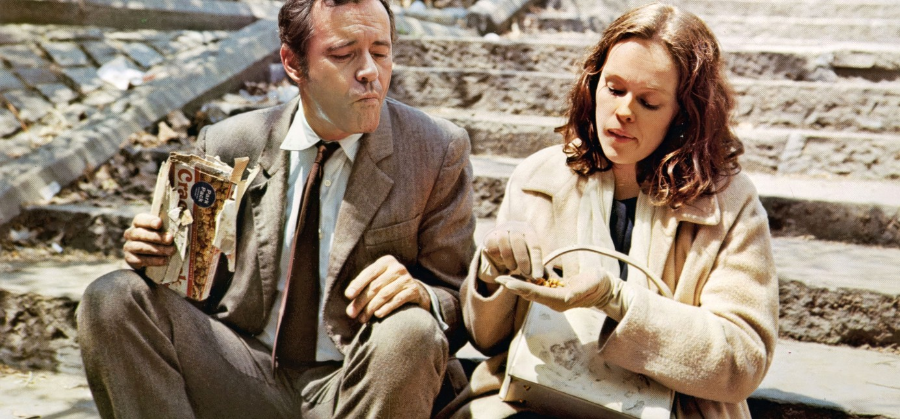

Park Avenue at 50th Street
New York
THE WENDOVER
Room Service
Dial 4
Dial 4

Guests take the morning air in Central Park, a short walk up Fifth.Box lunches on request
Breakfast
In your room, 6 A.M. to noon
Rib Eye Steak and Eggs5.25
Seared to order and rested, two eggs fried, hash browns and buttered toast.
The Continental1.70
Chilled orange juice, a warm croissant, sweet butter, preserves and a pot of coffee.
Buttermilk Griddle Cakes1.85
A tall stack with whipped butter, warm maple syrup and country sausage.
Eggs Benedict2.95
Poached eggs and Canadian bacon on a toasted English muffin, hollandaise.
Strawberries and Cream.95
Sliced berries, sugared lightly, with a jug of heavy cream.
Our kitchen never runs out. Taxis scarce? Ask the doorman.Form RS-1970
WHILE YOU WERE OUT
For Mr. G. Kellerman
Of Twin Oaks, Ohio
Message Your office called.
Please call back in the morning.
FRONT DESK 11:40 P.M.